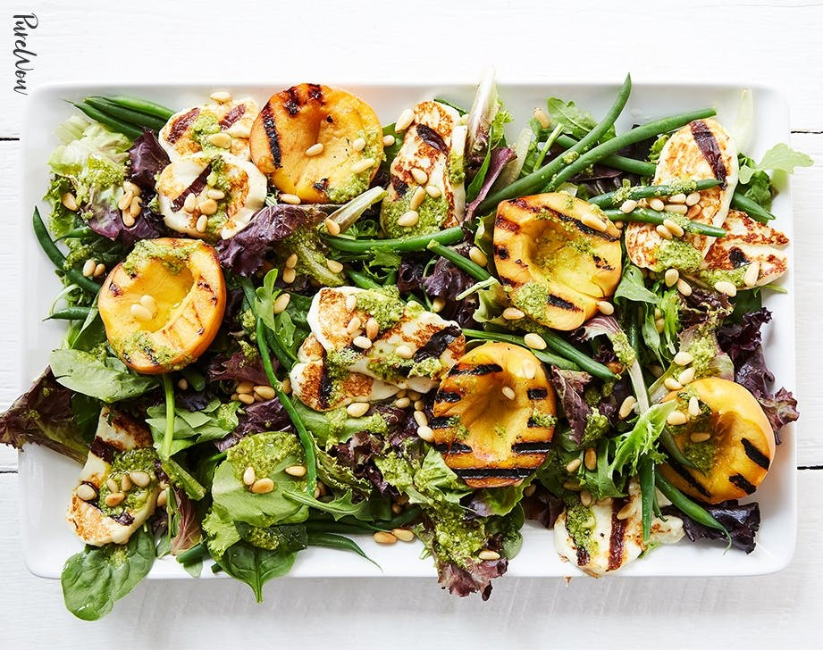

Mi kéne, ha volna, Michelangelo?
Pocipakolásra
- Marhahusis nasi koviubival
- pityókával
- krumplinudlival
- céklapürével
- Cucus cafat kolompérral
- kérek salit
- nem kérek salit
- Csipet-csapat zöldségágyon
- pipihusiból
- Cucu malacból
- hamarhamondja
- frisszen, capkodószan
- ...amúgy én vega vagyok
- Baripöri na meg nudli
- koviubival
- tejfeles ubisalival
- ecetes gyöngyhagymával

Szomjoltók
- Rozi rozé
- Mary Merlot
- Királylányka
- Igezsresc picante